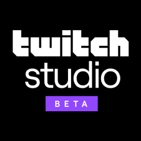
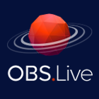

Esses são alguns dos programas para realizar transmissões.
Aplicativos:
Streamlabs OBS
Open Broadcaster Software

Beta do Twitch Studio
Lightstream Studio

OBS.Live
Player.me
XSplit Broadcaster
Streamlabs OBS é grátis, tem o código aberto e é um jeito fácil de começar a transmitir. O aplicativo foi construído em cima do OBS com um monte de recursos empolgantes: máscaras faciais, widgets e chat integrados, encoders específicos para jogo e milhares de sobreposições e temas grátis.